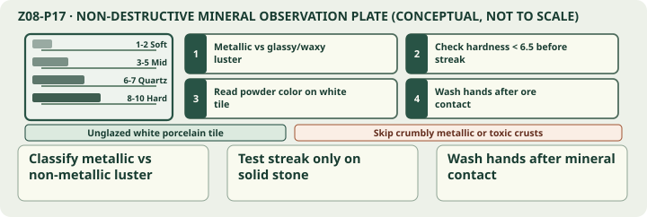

Z08-P17 · Rocks, minerals and materials · New manuscript
Mineral Streak, Luster and Color Variability Traps
Use powdered streak and light-reflection luster instead of unreliable bulk surface color when screening opaque and translucent minerals.
When it applies · Distinguishing iron oxides, sulfides, quartz, and dark silicates.
Equipment · Unglazed porcelain tile, daylight, hand lens, wash water.

Actions
- Classify luster first as metallic (opaque bright metal shine) versus non-metallic (glassy, waxy, pearly, dull, or earthy) under natural daylight.[R04]
- Note that streak color on unglazed porcelain is far more consistent than specimen color—for example, dark metallic or earthy hematite leaves a reddish-brown streak.[R04, R14]
- Avoid streaking minerals harder than porcelain (~6.5), which simply scratch the tile white, and never crush dusty metallic or sulfide ores.[R04, R06, R14]
Failure recognition · Trusting bulk color mistakes red jasper for iron ore or fool-gold pyrite for benign quartz, while crushing unknown sulfides risks heavy-metal dust exposure.[R04, R14]
Verify · Luster class, hardness relative to porcelain, and uncontaminated streak color are recorded with handwashing afterward.[R04, R14]
Stop or change course · Stop streak testing on soft crumbly metallic minerals, bright yellow/green crusts, or any suspected lead, arsenic, or fibrous specimen.[R07, R14]
Evidence and editorial notes
- R04 · USGS · Collecting Rocks: Rock Classes and Mineral Property Basics (USGS GIP)
- Section: Hardness, luster, streak, and fracture vs cleavage · Conditions: Non-destructive mineral observation with simple field cues
Support: Scratch hardness, unglazed streak, luster, and fracture-versus-cleavage patterns narrow candidate mineral groups.
Limitations: Field scratch checks cannot establish chemical purity, trace heavy metals, or absence of hazardous fibers. · Conflicting evidence: Color alone is unreliable across quartz, calcite, and feldspar varieties.
Editorial note: Core Z08 mineral screening basis. · Specialist reviewer: Mineralogist
Primary source · checked 2026-11-25
Current assessment · A04-R04 (2026-11-25) · Bounded support confirmed from an alternate source (A04): The properties are identification clues. A record of an existing surface is preferred and a destructive field test cannot establish use safety. Limits: Specialist review PENDING (Mineralogist); publication HOLD. All release decisions pending. - R06 · NIOSH / CDC · Crystalline Silica Respiratory Dust Hazards (2024)
- Section: Overview; Exposure · Conditions: Silica-bearing material disturbed by cutting, grinding, or similar dust-producing work
Support: Respirable crystalline silica exposure can cause silicosis and other disease. Avoid creating dust during field recognition.
Limitations: Hazardous particles may be invisible. Wind, casual wetting and a mask alone do not establish exposure control. · Conflicting evidence: Conditions are recorded in the A03 audit.
Editorial note: Mandatory Z08 silica/eye safety gate. · Specialist reviewer: Industrial hygienist and geologist
Primary source · checked 2026-11-25 - R07 · U.S. EPA · Learn About Asbestos and Naturally Occurring Mineral Fibers (2025)
- Section: Naturally occurring asbestos and fibrous minerals · Conditions: Outcrops, fibrous veins, serpentinite, and iron-formation rock
Support: Naturally occurring asbestiform mineral fibers pose severe inhalation risks if disturbed, broken, or abraded.
Limitations: Field sight alone cannot distinguish benign fibrous minerals from regulated asbestos; leave fibrous mineral veins undisturbed. · Conflicting evidence: None noted.
Editorial note: Mandatory Z08 mineral-fiber stop rule. · Specialist reviewer: Industrial hygienist and mineralogist
Primary source · checked 2026-11-25
Current assessment · A04-R07 (2026-11-25) · Bounded support confirmed (A04): EPA identifies asbestos in rock and soil and health risks from airborne inhalation. Appearance cannot establish airborne exposure or absence. Limits: Specialist review PENDING (Industrial hygienist and mineralogist); publication HOLD. All release decisions pending. - R14 · USGS · National Minerals Information Center and Mineral Commodities (Current web edition)
- Section: Metallic ores, sulfides, and heavy-metal mineral toxicity · Conditions: Unidentified metallic-luster minerals, tailings, or bright oxidized crusts
Support: Sulfide ores and metallic minerals can contain lead, arsenic, mercury, or copper compounds hazardous via dust or hand-to-mouth transfer.
Limitations: Do not taste, lick, burn, or process unidentified metallic or brightly crusted minerals; wash hands after handling. · Conflicting evidence: None noted.
Editorial note: Blocks hazardous mineral extraction/handling. · Specialist reviewer: Geochemist and toxicologist
Primary source · checked 2026-11-25
Current assessment · A04-R14 (2026-11-25) · Open: support partial or missing (A04): No exposure or toxicological operator section for the combined ore claim. Need exact material mineralogy and mapped site exposure. Limits: Specialist review PENDING (Geochemist and toxicologist); publication HOLD. All release decisions pending.
Source lineage · New manuscript (Z08 P16 mineral properties) · Classification · New manuscript.